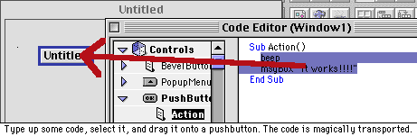
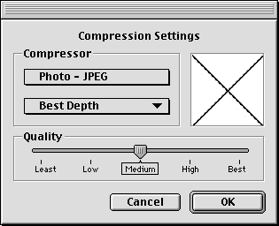
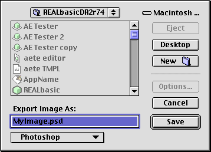

Tips
Last Month, I only had one tip. So, this month, I felt
obligated to make up for it with three tips—an alltime high. Enjoy!
Tip #1 - Make a Help Menu
 When
the Apple Guide (now Help) menu made its debut in System 7.5, it wasn't used by many
applications. However, it's caught on quite a bit since then, and many applications,
like Netscape, put a whole hord of items in that menu.Wouldn't it be nice if that
could be done in RB? Well, it can!
When
the Apple Guide (now Help) menu made its debut in System 7.5, it wasn't used by many
applications. However, it's caught on quite a bit since then, and many applications,
like Netscape, put a whole hord of items in that menu.Wouldn't it be nice if that
could be done in RB? Well, it can!
While creating release note summaries for DR1r4-DR1r35a (check out
RBM's new collection page), I stumbled across a particularly interesting note in
DR1r23 (released on 11/11/97):
* Added new NotePlayer control (see new documentation)
* Added help menu support (create a menu called Help)
* Added new Resource fork object for accessing resources (see new documentation)
 While
the first and last notes seem rather funny now, the middle one is something that
most people (including myself) didn't know about. It's fairly self-explanatory. As
the screenshot shows, you create a menu called "Help", and put various
items in it. Then, put in any appropriate menu handlers and enablers, and your application
has commands in the actual Help/Apple Guide menu. Amazing!
While
the first and last notes seem rather funny now, the middle one is something that
most people (including myself) didn't know about. It's fairly self-explanatory. As
the screenshot shows, you create a menu called "Help", and put various
items in it. Then, put in any appropriate menu handlers and enablers, and your application
has commands in the actual Help/Apple Guide menu. Amazing!
Tip #2 - Dragging code onto controls
RB's code editor definitely supports drag and drop, but so
do its controls! At least pushbuttons do, anyway. In my continuing search for features
added in DR1 that everyone has forgotten about, I found that you can drag text from
the code editor on to a pushbutton! As this nice picture shows, it's quite
simple. This feature, believe it or not, has been around since DR1r35a! Even more
oddly, it has received absolutely no attention from REAL SW since then. Therefore,
it only works for pushbuttons, but it's still pretty neat, and occasionally saves
time.

Tip #3 - Exporting Pictures
 One
of the new features in DR2 was the ability to add pictures of any type QuickTime
suports to your project. In addition to that, a handy-dandy picture exporting function
was added that very few people noticed: ExportPicture. It takes one parameter,
a picture, and returns a boolean.
What's so special about it? Well, it handles all of the save dialogs
for you, and it lets the user export the picture in five different formats (PICT,
BMP, JPEG, PhotoShop (!), and QuickTime Image). Yes, you can export PhotoShop pictures
right from RB! You won't be able to use things like layers, but it's still a darned
cool feature. If the user clicks OK, the ExportPicture function will return true.
Otherwise, it will return false, and you'll know that the picture hasn't been saved.

PhotoShop from RB!? Only in DR2... =)